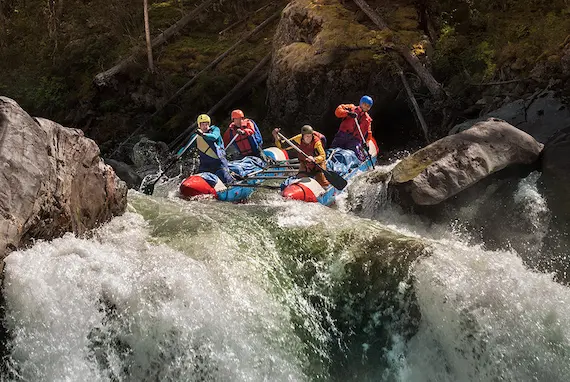

Silver Current River Retreats Ltd

Silver Current River Retreats Ltd is a eco-tourism and riverside hospitality
company focused on creating relaxing nature-base experiences along scenic
river
environments.The company offers river cruises, floating lodges, kayaking
adventures, fishing tours, and environmental friendly vacation packages for
families, tourist, and corporate groups.
*AIMS
i.To provide peaceful and memorable river-based recreation experiences.
ii.To promote eco-friendly tourism and environmental conservation.
iii.To support local communities through tourism and employment
opportunities.
*OBJECTIVES
i.Develop safe and comfortable riverside resort and cruise service.
ii.Attract both local and international tourist through quality customer
service.
iii.Organize educational and recreational river activities throughout the
year.
iv.Maintain sustainable business practices that protect aquatic
ecosystems.
*GOALS
i.Become a leading river tourism and hospitality brand in West Africa.
ii.Expand operations to multiple riverside destinations within five years.
iii.Achieve high customer satisfaction and repeat visitor rates.
iv.Contribute actively to river clean-up and conservation projects.
History
Silver Current River Retreats Ltd.was founded in 2018 by a group of environmental
enthusiasts and tourism entrepreneurs who shared a passion for nature, hospitality,
and sustainable development.the idea for the company began after the founders
noticed the growing interest in eco-tourism and the lack of quality riverside
recreational facilities in many parts of West Africa.
The company started with a small riverside campsite and a single sightseeing boat
that provide guided tours along peaceful river channels.Due to excellent customer
service, beautiful natural scenery, and unique outdoor experiences, the business
quickly gained popularity among tourist, schools, and corporate organizations.
Over the years, Silver Current River Retreats Ltd. expanded its services to include
luxury floating lodges, kayaking, cultural festivals, fishing adventures, and
environmental awareness programs.The company also partnered with local communities
and support river conservation projects.
Today,Silver Current River Retreats Ltd. is recognized as a growing eco-tourism
company committed to promoting relaxation, adventure, and environmental
sustainability while providing unforgettable experience for visitors.